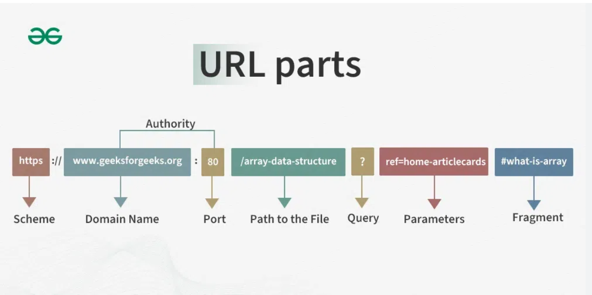

Home ｜
World Wide Web ｜
TCP/IP ｜
Web Browsers ｜
URL ｜
DNS ｜
HTTP ｜
Extranet ｜
Multitier architecture ｜
FTP ｜
HTML ｜
Web 1.0 ｜
Web 2.0 ｜
Web 3.0 ｜
Web 4.0
Uniform Resource Locator

A Uniform Resource Locator (URL) is a string of characters used to identify a resource on the Internet. It specifies the location of a resource and the mechanism for retrieving it.
URLs consist of several components, including the protocol (e.g., http, https), the domain name, the path to the resource, and optional query parameters.
Key features of URLs include:
- - Provides a standardized way to locate resources on the Internet
- - Handles the retrieval mechanism for accessing resources
- - Structure: scheme + domain + port + path + query + fragment
- -Scheme indicates the protocol used (http, https, ftp, mailto, etc.)
- - The domain is resolved to an IP address via DNS